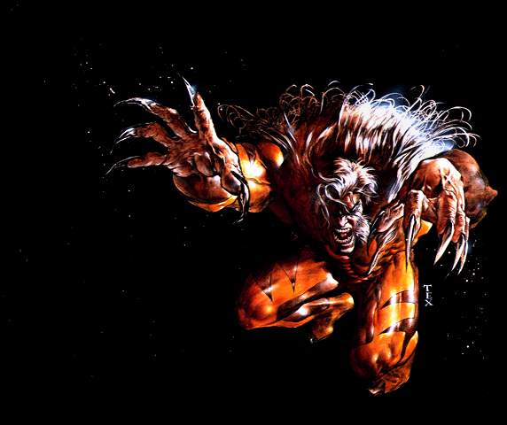

Forums galactiques > Taverne galactique : lieu de discussion informel > Le p'tit bar du coin
Pages : 1 2 ... 12 13 14 ... 23 24
| anonymations Réputation à la taverne : 159  09/08 ETU 23:20 | Score : 0 Détails Enfin je sais que ces deux là s'aime vraiment, mais que Luna à du mal à cause de son vécu. D'ailleur, je pense que la meilleur chose à faire, serait de l'inviter à notre table. Il n'y a pas besoin de connaître les sentiments de chacun pour savoir qu'en ce moment elle se sent seul et triste. quand j'ai dû repartir après la soirée de Fangörn, j'ai aussi eut se sentiment d'abandon.
Tu devrais peut-être aller la chercher, entre filles ça irais mieux. J'en avait l'intention mon coeur. Elle se leva donc, et alla vers Luna. Ma chère, voudiez-vous vous joindre à notre table ? Dans ce genre d'évènement, mieux vos ne pas être seul et rester autour de personnes vous écoutant. nous serions heureux que vous nous rejoigniez. | ||
| Amoga Réputation à la taverne : 5  09/08 ETU 23:48 | Score : 1 Détails Pendant que des commandants pleuraient, et que d'autres les consolaient. Amoga lui était dans un coin sombre du bar. Personne ne l'avait vu rentrer, mais il était présent. Il était occupé à siroté un liquide noire. C'était surement un cocktail ou un alcool, mais la couleur avait viré au noir dès que ces lèvres heurtèrent le liquide contenu par son verre. Il patientait en écoutant les blabla voisin.
Trise vie pour quelques années ... Marmona t-il entre deux gorgées. Puis, après quelques verres vidés, le coin ou était Amoga était à présent vide, il avait reprit son calme. | ||
| Krynn Réputation à la taverne : 47  10/08 ETU 08:37 | Score : 1 Détails Jade avait du s'eclipser quelque temps, histoire de règler une affaire qu'elle n'avait pu repousser. C'était dommage d'ailleurs, elle aurait bien aimé rester ne serais-ce que quelques instants le soir de son départ. Mais après tout, si elle n'avait pas du partir, elle n'aurait pas pu voir le visage de Saegmund, trempé jusqu'aux os, qui la regardait ! C'aurait été dommage de rater une scene pareille ! Qu'est-ce qu'elle s'était amusée !
Quand elle était entrée en compagnie de Anti Virus, elle l'avait cherché des yeux mais ne l'avait pas aperçu. Peut-être n'était-il pas loin, mais son attention avait été détournée par les conversations. Oui, faites-la rejoindre notre table. Il n'est pas bon de la laisser cogiter seule. Je vais chercher à boire pour tout le monde. De la bière ? Ou un bon café peut-etre ? Alors qu'elle se levait, Jade remarqua un homme. Elle décida de lui apporter un café à lui aussi. | ||
| Ren56 Réputation à la taverne : 92  10/08 ETU 11:23 | Score : 0 Détails Ren entra dans le bar et chercha Luna des yeux, celle-ci se trouvait a la table de ses amis Computer, Light, Werdandy et Jade. Il partit les voir et dit a Luna :
Luna, je suis désolé. Veux tu bien me pardonner ? Si quelque chose de mal devrait t'arriver, je m'en voudrait toujours de ne pas avoir été là a ce moment. Alors je voudrais savoir ce qu'il se passe en toi. Storm m'as tout raconté. Mais ne t'inquiete pas, ici , personne n'oseras te banir en sachant qui se trouve derrière toi. Alors veux-tu bien me pardonner ? | ||
| Luna Réputation à la taverne : 38  10/08 ETU 11:35 | Score : 0 Détails Luna, qui était parvenue à se calmer grace à l'aide de ses nouveaux amis, sentit les larmes revenire sur les bords de ses yeux. Elle n'avait pas l'habitude de tant d'amitiée et de compassion. Peut-être était-ce des larmes de joies ?
- Je suis vraiment confuse... Aujourd'hui je n'arrête pas de pleurer... (rire) Merci à vous tous... Elle but une gorgée du café brulant qu'on lui avait apporté quelques minutes plus tôt et se tourna vers Ren : - Biensur Ren que tu es pardonné, c'est moi qui devrais te présenter des excuses pour m'être enfuie... Luna grelotait toujours mais elle avait retrouvé le sourire. | ||
| Ren56 Réputation à la taverne : 92 10/08 ETU 11:42 | Score : 0 Détails Ren choqué d'avoir entendu ceci sortir de la bouche de Luna lui dit d'une voix douce:
Tu n'as pas a t'excuser , je comprends que tu t'es enfuie. Et je comprends que tu dois réfléchir. S'il faut que j'attendes mille ans, je les attendrais. Le temps n'est pas un problème s'il on aime quelqu'un vraiment. Puis il s'assis a la table et salua Computer et ses amis. | ||
| Dark Ezeckiel Réputation à la taverne : 776  10/08 ETU 11:49 | Score : 0 Détails La porte du bar s'entrouvrit, mais, curieusement, personne ne franchit le seuil de l'établissement. Un vague courant d'air flotta un instant dans l'air, imperceptible. Ren fut soudainement happé vers la porte du vestiaire,ouverte et refermée silencieusement en un éclair, une main plaquée sur la bouche pour qu'il n'ait pas l'occasion de lâcher un cri de surprise. Dissimulés au beau milieu de dizaines de manteaux, Dark le relâcha, et écarta ses mèches sombres de son front avant de lâcher un soupir,mélange de soûlagement et de satisfaction. Il fit un léger signe de tête à son ancien "élève" en signe de silence, balança à Ren un manteau bleu sombre identique à ceux que le jeune Tao avait l'habitude de porter, en l'occurence trouvé dans les locaux désertés du Doppelgänger. Il était clair et net que Dark, s'évertuant à lui expliquer en langage des signes, indiquait à Ren de donner le manteau à Luna. Une fois que le jeune shaman fit mine d'avoir saisi, Dark le poussa sans ménagement à l'intérieur de l'établissement en lui souhaitant bonne chance,tandis que lui s'accroupissait au milieu des manteaux en attendant de voir ce qui allait se produire...
| ||
| Ren56 Réputation à la taverne : 92 10/08 ETU 11:56 | Score : 0 Détails Ren retourna a sa table et remarqua que Luna , toute trempée, tremblait de froid. C'est alors qu'il comprit ce que Dark lui disait. Il prit son manteau le posa sur les épaules de Luna et dit:
[red]Tiens ceci te tiendra peut etre plus chaud. Je m'en voudrait que tu attrapes froid.[red] Puis il s'assit et demanda une bière a Jade. | ||
| Luna Réputation à la taverne : 38 10/08 ETU 13:29 | Score : 0 Détails Luna se blottit dans le manteau que Ren lui avait tendue puis, oubliant certainement les autres autour d'elle, elle se blotti contre Ren qui l'a pris dans ses bras.
- Merci... | ||
| Dramon Réputation à la taverne : 3  10/08 ETU 13:44 | Score : 0 Détails Luna eu juste le temps de finir sa phrase lorsque la porte s'ouvrit, un homme étrange avec une queue et des ailes passa la porte et se dirigea vers une table vide quand il renifla une odeur qui lui était familière, une odeur d'animal melé a celle d'une jeune femme.
Il se tourna et appercut Luna sa jeune cousine qu'il avait vue pour la dernière fois lorsqu'elle avait 12 ans à la fête de ses parents. | ||
| Luna Réputation à la taverne : 38 10/08 ETU 13:56 | Score : 0 Détails Luna ne grellotait plus à présent. Quand elle vit son cousin elle se leva et resta un moment, ébétée.
- Dramon ? Mais qu'est-ce que tu fais là ? - Et toi qu'est-ce que tu fais la ? Trempée et dans les bras de se... | ||
| Dark Ezeckiel Réputation à la taverne : 776 10/08 ETU 14:26 | Score : 0 Détails À l'étroit dans son vestiaire, Dark décida arbitrairement que c'était le moment propice pour jaillir de sa cachette. Ouvrant la porte à la volée, il bondit à l'intérieur du bar comme un diable sortant de sa boîte, prêt à en découdre, faisant face au nouveau venu:
À ce quoi? J'écoute... Il fit légèrement craquer ses phalanges de la main gauche,histoire d'appuyer quelque peu son air intimidant du fait qu'il surplombait d'une tête le semi-dragon... | ||
| Dramon Réputation à la taverne : 3 10/08 ETU 14:34 | Score : 0 Détails Dramon se retourna et appercut cet homme qui venait d'arriver la dont ne sait ou
Se n'est pas ce que je voulais dire mais elle a deja fait de nombreuse erreurs et je ne tient pas a se que ca recommence mais puisque vous êtes la je supose que vous allez pouvoir veillez sur Luna et son jeune amie. Sachez le je ne serais jamais bien loin au moindre problème je pourais vous aider avec grand plaisir | ||
| computer Réputation à la taverne : 64  10/08 ETU 15:24  | Score : 0 Détails Anti virus était à quelques mètres de Luna et de son cousin et parla fort pour que tout le monde entende.
Je porte un toast pour la retrouvaille de Luna et de son cousin. Je porte un toast de la part de Light sur Luna et Ren pour le nouveau couple d'Espérance en espérant que àça durera longtemps. Il regarda Jade et dit Je te demande de préparer un cadeau en leur honneur mais pas un trop gros, car ce n'est pas des mariés ou des fiancés pour le moment. Edit: Demande à Light | ||
| Krynn Réputation à la taverne : 47 10/08 ETU 15:32 | Score : 1 Détails Un cadeau ?
Jade s'approcha d'Anti Virus et lui chuchota à l'oreille. Tu penses que quelques bouteilles suffiraient comme cadeau ? Pleines les bouteilles, evidemment. Mais des bouteilles de quoi aussi ? Je sais pas moi ! T'es malin de m'avoir demandé ça à moi ! Bon attend je vais voir ce que je peux trouver... Jade se leva et se dirigea à l'arrière du bar, bien déterminée à revenir les bras pleins. | ||
| anonymations Réputation à la taverne : 159 10/08 ETU 15:50 | Score : 0 Détails Werdandy rougissait à son tour par toute l'amour et la joie retrouvée qui planait dans le bar. Elle en était transformée. Soudain, deux sentiments très fort émanaient de deux personnes. Il y avait Luna qui était conquise dans les bras de Ren en ayant retrouvé un membre de sa famille par la même occasion, et la deuxième personnes fut Light. Elle fut surprise en retrouvant ce sentiment provenant de son amour. La première fois qu'elle l'avait détecté était lors de leurs rencontre. Heureuse d'avoir retrouvé le feu du premier jour, elle tourna sa tête vers Light qui la regardait déjà avec attirance. Werdandy l'enlaça et lui dit :
Merci ... Light était un peu surpris, mais il comprit vite. Il lui releva la tête pour la regarder encore et l'embrassa. Pourquoi moi !? | ||
| Dramon Réputation à la taverne : 3 10/08 ETU 17:36 | Score : 0 Détails Après ses émotions Dramon joingnit ses deux mains et disparut dans une flamme rouge et noir
| ||
| Ren56 Réputation à la taverne : 92 10/08 ETU 19:02 | Score : 0 Détails Ren regarda Luna se blottir dans ses bras, l'embrassa amoureseument et lui dit dans un murmure presque inaudible:
Merci... Puis il la serra dans ses bras, s'asseya avec elle a la table et remercia leurs amis de leurs félicitations. Il était très fier de lui et se sentait grandir en lui, Luna l'aimait comme lui l'aimait. Merci Jade mais sers a tous le monde ce qu'il veut, c'est ma tournée. Il se leva ,monta sur la table , et cria dans le bar: Mes amis aujourd'hui est un grand jour pour moi.Aujourd'hui , ma belle et magnifique Luna m'as avoué qu'elle m'aimait. Pour ça je l'aime encore plus que je le faisait déjà. En plus elle a retrouvé quelqu'un de sa famille, je suis donc encore plus content pour elle. Alors prenez ce que vous voulez, c'est moi qui paye. Puis il se rassit a coté de sa belle etsuivit la conversation. | ||
| Luna Réputation à la taverne : 38 10/08 ETU 19:15 | Score : 0 Détails Luna était heureuse. Elle était entouré de tous ses amis, de Storm et bien sur de Ren.
Cela peut paraitre bizar mais c'était la première fois epuis longtemps qu'elle avait de vrai amis. Elle était heureuse et amoureuse. Quand Ren se rassit elle se reblotti contre lui. Sa chaleur lui était devenue indispensable. Elle sourit a Ren qui la regardait et suivie le cour de la conversasion. | ||
| Amoga Réputation à la taverne : 5 10/08 ETU 22:51 | Score : 0 Détails Le petit coin sombre avait reprit vie. Amoga était revenu. C'était déjà la deuxième fois qu'il venait dans cet endroit. Est-ce que cet homme sans attache apparente l'affectionnait-il ? Il avait encore un verre en main contentant toujours ce liquide noir. Etait-ce la même chose que l'autre fois ? Seul lui le savait.
Après des pleures et gémissements, de la joie ... Il lui en faut peu à cette petite. Quand son verre fut vide, Amoga était toujours présent, il ne décida pas de partir. Il jouait avec une petite souris grise sur le coin du comptoir. Qu'attendait-il ? Un autre verre ? |
Pages : 1 2 ... 12 13 14 ... 23 24
Forums galactiques > Taverne galactique : lieu de discussion informel > Le p'tit bar du coin